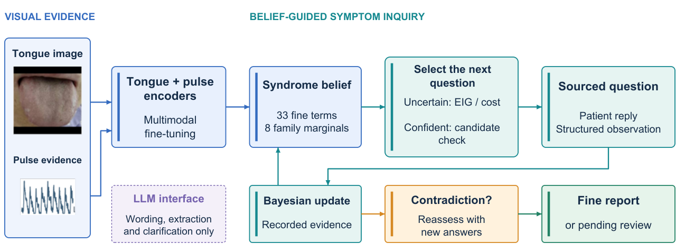

Seeing Is Not Enough: Knowledge-Grounded Active Inquiry from Uncertain Visual Evidence

Tongue photographs leave clinically relevant symptoms unobserved. This TCM decision-support study combines image and pulse evidence with targeted symptom questions, reassesses predictions when their support falls, and records the evidence behind a ranked syndrome shortlist. The benchmark contains 2,600 constructed cases based on real photographs; 2,599 enter source-disjoint evaluation and one is training-only.
Key finding At acquisition cost 12 on clean images, combined image/pulse evidence and inquiry reaches 65.8% fine-syndrome accuracy and 90.8% top-three inclusion, compared with 59.4% and 87.3% for a same-prior, training-optimised static question order.
Current full manuscript, including supplementary material.